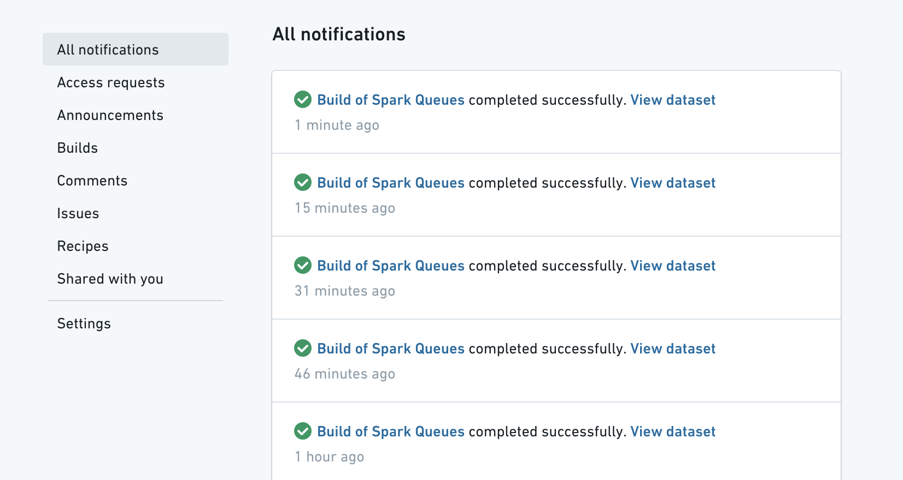
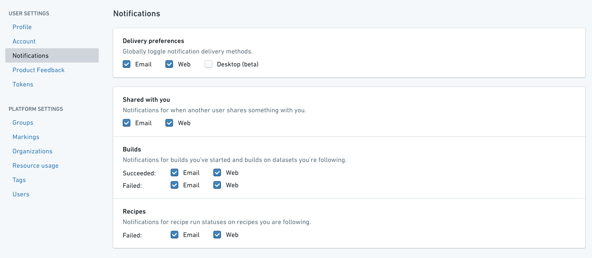
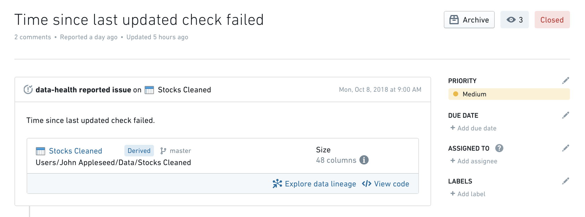
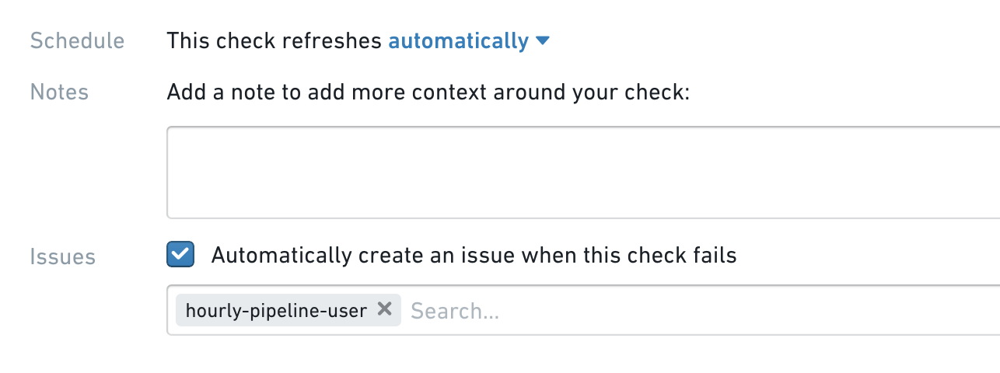

Data Health is integrated with Foundry Notifications and Emails to provide in-platform notifications and emails, respectively, in the event of a failed check.
Data Health will always send an in-platform notification to watchers of failed checks:

As a watcher of a check, you can also enable email notifications for failed checks. You can change your email and notification preferences by navigating to the Profile Icon in the upper right corner, clicking on Settings and then navigating to the Notifications tab:

To receive updates on checks make sure to check everything under the Builds section.
You can also configure Data Health to automatically report an Issue when a check fails to make further debugging & discussion easier:

To enable Issue reporting, you just need to tick the Automatically create an issue when this check fails box when creating/editing a check:

You can also automatically assign the created issue to a specific user by entering their name in the box below.
:::callout{theme="neutral"} Data Health will file an issue upon check failure, but it can also automatically close the issue once the check resolves. :::